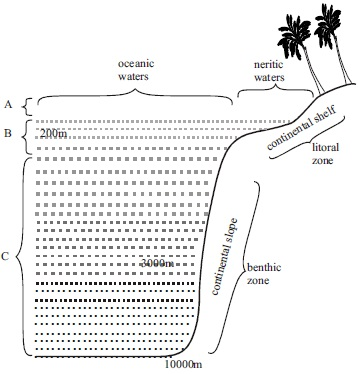
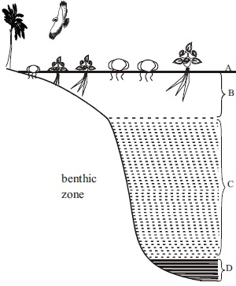
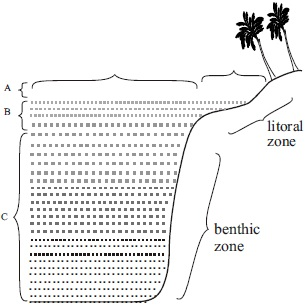

Subdivisions of Aquatic habitat and their
characteristic
Distribution of organisms in various
aquatic habitats
General adaptative features of organisms
to the various aquatic habitats
fig16.1: Mushroom

Background Information
A habitat is a place an organisms naturally lives. It
is broadly classified into two: Aquatic and
Terrestrial habitats.
Aquatic habitats are further subdivided into three
kinds:Marine or saltwater habitats, freshwater
habitats, estuarine orbrackish water habitats.
The Marine habitat
The marine habitat is characterized by the
following : *A large body of water which
contains dissolved ions like sodium, potassium,
magnesium, calcium, phosphate, iodine,
Hydrogen trioxocarbonate IV, chloride,
tetraoxosulphate IVand trioxonitrate (V)ions
High salinity of up to 35 parts per one
thousand
A density that is higher than that of ordinary
water. It is about 1.28glcm3.
A temperature, which falls with, increase in
sea depth and pressure which increase with
in crease in sea depth
An oxygen concentration, which decrease
with depth.
ApH of about 8.0 to 8.5 (Alkaline)
The presence or occurances of waves,
ocean currents and tides.
Note:Waves are temporary movements of
surface waters of the sea which can occur in any
direction while an ocean current is a movement
of the surface water that has concentrated
direction. Tides are alternate rise and fall of the
sea surface which happens approximately twice
a day.
Major Ecological Zones of the Marine habitat
The marine habitat consists of the seashore and
the open sea water body itself. It is broadly
categorized into two: The littoral zone and the
benthic zone.
The Littoral Zone: This region extends from the
base substratum. It consists of supratidal or splash
zone, intertidal zone and subtidal zone.
The Bentic Zone: This extends from the end of the
continental shelf. There is the bathyal zone which
is down to 2000m, The hadal zone which is beyond
7000m deep. It extenD down to the sea floor.
The Fresh water habitat
Fresh water is categorized into:
Stagnant waters called Lentic water/eg ponds and
lakes and flowing water which is called lotic water
(example spring and streams and rivers)
Characteristic of fresh water habitat
No significant amount of salt is present
Water body is relatively small when compared to
that of marine habitat.
Seasonal variation in water volume, turbidity and
speed of flow of water, all these increases during
rainy season and fall during dry season.
Relatively shallow water that light penetrates through.
Temperature difference at the surface and bottom is not
much
Oxygen is available more at the surface though
completely circulated through
Ecological Zones of a fresh water habitat
There is the littoral zone which is the shallower part (No
supratidal and intertidal) there is also the bentic zone
which is the deeper part.
Estuarine Habitat
Characteristics
Relatively shallow water body when
compaired to that of marine water.
Mild wave action or its complete absence
Soft substratum which is poorly aerated
Denser than fresh water
Salinity varies and undergoes seasonal
changes.
Distribution of Organisms in Aquatic habitat
HABITAT
ORGANISMS DISTRIBUTION
Marine
Splash zone
Interidal zone
Suntidal zone
Nenlic zone
Oceanic zone
Sand crab, ghost crab, bivalves, annelids Annelids, muluscs, Barnacles Snails, Crabs, Crayfish, Lobsters Plankton, Fish (Nektons)Plankton and Fishes (Nektons)
Freshwater
Plants such as water lily, grasses, floating plants, such as water lettuce; microscopic plants like diatoms, blue green algae, clamydomonas. Animals such as fishes, amphibian, reptiles, Birds, hippopotamus.
Estuarine
Hermit crab hairy mangrove crab, mud skipper, algae, bacteria; Plants like red mangrove and white mangrove.
Adaptative features of organisms in an aquatic habitat
MARINE
Stream line shape, presence of fins, light body and flat
shape; presence of gills and body surface as gaseous
exchange structure ; Laying of numerous eggs, external
fertilization, Digging into the sand and mud, withdrawing
into shells as in snails, protective colouration as in
mudfish.
FRESH WATER
Presence of air bladder, expanded shape and
light weight among floating plants.
Presence of gills for respiration in water and
lungs for respiration under dry condition for
lung fish.
ESTUARINE
Stilt roots in red mangrove which gives rise
to numerous absorbing rootlets which have
airspace for conducting air to the tissues of
the roots breathing roots in white mangrove
which projects upwards from water logged
soil and used for oxygen absorption.
GENERAL QUESTIONS
1. State the three kinds of aquatic habitat
2. The pH of a marine habitat shows that it is an
medium
3. Alternate rise and fall of the surface of the sea
approximately twice a day is called
4. Waves differ from ocean currents because waves
are temporary movements of the surface waters of
the sea which can take place in any direction,
while ocean current are movement of surface
water of the ocean which has
5. Part of the littoral zone which extends from the
low tide mark to a depth of about 200 meters is
called
6. The water of the continental shelf is called
while that beyond the shelf is called
7. Fresh water habitat which are stagnant and calm are
called
While those that are flowing are called
8. Part of the littoral zone where water from the sea
splashes when waves break at the shore is called
9. The surface water of the ocean supports two
main groups of organisms called plankon and
10.
,
and
are examples of fresh water habitat.
11.
and
influences the distribution of animals in an estuarine habitats.
12. A red mangrove is the main species of flowering plants found in estuaries. It has stilt roots while the
white mangrove has
roots
13. Write down two adaptative features of freshwater habitat animals
State four organisms that can be found in a brackish water habitat
Expression Exercise
1.
State four adaptations of organisms to a marine habitat
2a What is a continental shelf?
(b) Draw two examples of a food chain in a fresh water habitat showing producers, primary consumer,
secondary consumers and tertiary consumers.
3a. Write down three groups a swamp vegetation can be grouped into
(b) Write three characteristic of an estuarine habitat
Practical Activities
1. Studying some aquatic habitats select the following habitats:
A marine habitat example a sea environment
A fresh water habitat example: The pond water, a nearby river or stream
Observe the types of plants and animals present in each of the habitats
Collect some samples of plants and animals in the habitat
Questions
Write down the various plants and animals you saw and observed in each of the habitats
Marine habitat
Fresh water habitat
Construct a sample food chain of the community of organisms observed for each of the aquatic habitat
Aquatic Food Chain
Fresh water food chain
2. Measurement of some habitat factors in a marine and freshwater habitat.
Apparatus : Meter rule; Secchi disc, thermometer, measuring tape, pH meter
Procedure: Measure the following habitat factors in the various habitats
The clarity of the waters using secchi disc
The temperature of the water bodies using thermometer
Height of the water at the study period
Measure the pH of the water bodies using the pH meter
Questions
Record your measurements for both marine habitat and freshwater habitat
Compare both values for each aquatic habitat and state any observable difference
Test of practical work (alternative to Practical)
fig16.2:

Write down the names of the various aquatic layers indicated by the alphabets A B C and D
fig16.3:

(i) Identify what is illustrated in the marine habitat above
(ii) Indicate and write down the littoral zone and benthic zone
(iii) Among the water levels indicated by A,B,C, where would you likely observe the highest number of community.
AQUATIC HABITATS
SSCE PAST QUESTIONS
JUNE 2002 Q3,a,b,& c
1. A student carried out an investigation, using a pond containing many water plants, to determine change in the level of
oxygen (02) and carbon (IV) oxide (C02) in the pond with time. The data is recorded as shown in the table below. Use
the data to answer questions (a) to (c)
Time of Day (Hours GMT)
Oxygen
Carbon(IV)Oxide
24.00 (Midnight)
38
32
2.00
27
36
4.00
16
43
6.00 (Dawn Morning)
11
46
8.00
14
46
10.00
27
38
12.00 (Noon)
60
17
14.00
72
16
16.00
87
14
18.00 (Dusk)
82
19
20.00
71
28
22.00
60
28
24.00 (Midnight)
44
38
(a) Using the data above, plot two graphs on a single sheet of graph paper, one to show the oxygen level and the other to
show the carbon (IV) oxide level; with time on the horizontal axis and the level of gases on the vertical axis.
(Note: Histogram not accepted)
(b) Using the plotted graph, indicate when the level of oxygen started to increase and stopped increasing.
(c) Explain why the levels of oxygcn and carbon (iv) oxide rose and fell at different times of the day